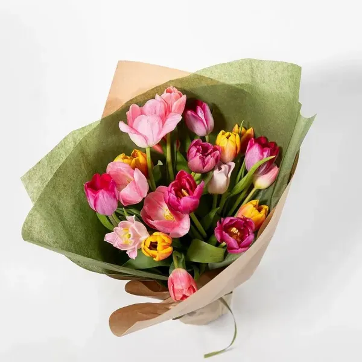
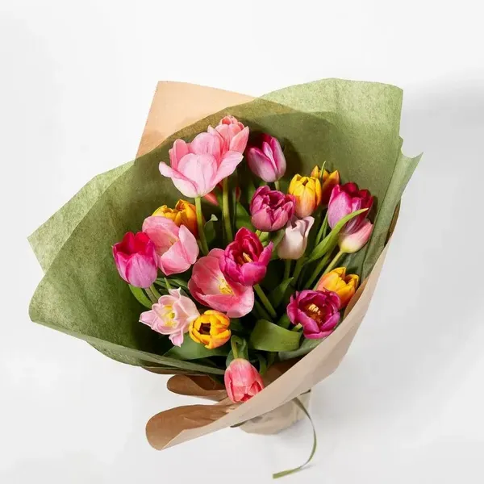

| Home | About Us | Gallery | Contact |
Welcome to our flower shop, where every bouquet is made with care, creativity, and a genuine love for flowers. We believe that flowers are more than just decorations—they are messages of love, joy, sympathy, and celebration. That’s why we take the time to select the freshest blooms, arrange them beautifully, and deliver them with the highest level of attention. When you choose our shop, you’re choosing quality you can see and feel. Our flowers stay fresh longer because we handpick each stem and handle everything with proper care. Whether you need a simple gift, a birthday bouquet, wedding arrangements, or decorations for a special event, we make sure you receive something truly memorable.
We offer a wide variety of flowers, unique designs, and customized arrangements so you can always find exactly what you’re looking for. Our friendly team listens to your ideas, gives helpful suggestions, and makes sure you get the perfect bouquet for any occasion. We also focus on fair pricing, fast service, and dependable delivery. Your happiness matters to us, and we work hard to make every order special. Choose us, and let our flowers brighten your moments with beauty and meaning. 

"Every bouquet we create carries a piece of our heart. We hope our flowers help you celebrate, express, and connect with the people you love."